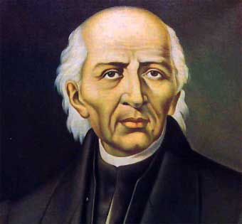
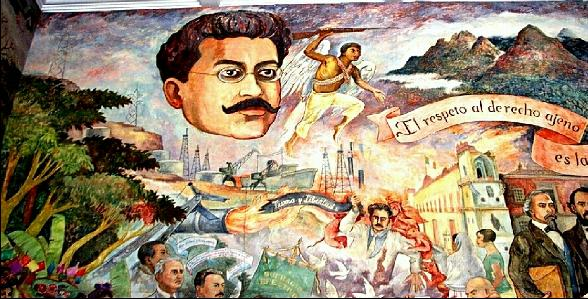

Fue a principios de 1862 que las tropas de los tres países desembarcaron en el puerto de Veracruz. Juárez logró un acuerdo con los ingleses y españoles: los Acuerdos de la Soledad, por lo que se retiraron; sin embargo, los franceses llamaron a tropas adicionales integradas por belgas, austriacos y soldados de la legión extranjera, las que llegaron a Veracruz en marzo de 1862. - See more at: http://culturacolectiva.com/5-de-mayo-la-batalla-de-puebla/#sthash.zapnnWSm.dpuf
MIGUEL HIDALGO
Miguel Gregorio Antonio Ignacio Hidalgo y Costilla Gallaga Mandarte y Villaseñor1 2 (Hacienda de Corralejo en Pénjamo, hoy en el estado de Guanajuato, 8 de mayo de 1753-Chihuahua, Chihuahua, 30 de julio de 1811) fue un sacerdote y revolucionario novohispano que destacó iniciando la primera etapa de la Guerra de Independencia de México con un acto conocido en la historiografía mexicana como Grito de Dolores. Dirigió militar y políticamente la primera parte del movimiento independentista, pero tras una serie de derrotas fue capturado el 21 de marzo de 1811 y llevado prisionero a la ciudad de Chihuahua, donde fue juzgado y fusilado el 30 de julio.
PORFIRIO DIAZ

José de la Cruz Porfirio Díaz Mori1 (Oaxaca de Juárez, Oaxaca, 15 de septiembre de 1830-París, Francia, 2 de julio de 1915) fue un militar mexicano,2 que ejerció el cargo de presidente de México en siete ocasiones; la primera, del 24 de noviembre de 1876 al 6 de diciembre de 1876 (después del triunfo de la Revolución de Tuxtepec, ocupando el cargo de forma interina); y la segunda vez, del 17 de febrero de 1877 al 5 de mayo de 1877. Nuevamente, ocupó el cargo de forma interina del 5 de mayo de 1877 al 30 de noviembre de 1880 (después de haber sido elegido Presidente). Y posteriormente, desempeñó la presidencia durante los periodos: 1884-1888, 1888-1892, 1892-1896, 1896-1900, 1900-1904, 1904-1910 y 1910-1911. Antes de asumir la presidencia fue un militar destacado, quién brilló por su participación en la Segunda Intervención Francesa en México. Combatió en la Batalla de Puebla, el Sitio de Puebla, la Batalla de Miahuatlán y en la Batalla de la Carbonera. Resaltaron sus acciones militares en el estado de Oaxaca, en donde organizó guerrillas contra los franceses. Porfirio Díaz, el 2 de abril de 1867, tomó Puebla, y el 15 de junio, recuperó para las tropas republicanas la Ciudad de México.
MIGUEL NEGRETE

Miguel Negrete Novoa (Tepeaca, Puebla, 8 de mayo de 1824 — Ciudad de México, 5 de enero de 1897) fue un militar mexicano, participó durante las guerras civiles del siglo XIX, así como durante las intervenciones de Estados Unidos y Francia. Fue ministro de Guerra durante la presidencia de Benito Juárez.
Durante 1861, el país estaba en bancarrota debido a medio siglo de conflictos y guerras casi constantes. No podía hacer frente ni a las necesidades más urgentes, por lo que el 17 de julio de 1861, el presidente Benito Juárez decretó prórroga de dos años para pagar deuda externa a países europeos. En octubre de 1861, Francia, Inglaterra y España se suscribieron a la Convención de Londres y se comprometieron a enviar militares a México para reclamar sus derechos como acreedores por una deuda que ascendía alrededor de 80 millones de pesos. Aproximadamente 69 millones eran para los ingleses, 9 millones para los españoles y 2 millones para Francia. Se negaron a negociar, por la vía diplomática, los términos y condiciones en los que se pagaría la deuda posteriormente. Así que Napoleón III, gobernante de Francia, decidió invadir México para establecer una monarquía favorable a Europa, surtirse de materias primas y en un futuro extender su imperialismo a Estados Unidos. Con ese fin, debía disolver el Gobierno mexicano establecido por el Presidente Benito Juárez.

a Batalla de Puebla tuvo lugar el 5 de mayo de 1862 cerca de la ciudad de Puebla (México), en el ataque y defensa del Fuerte de Loreto y del Fuerte de Guadalupe, durante la invasión francesa a México. En México se conmemora con el “Cinco de Mayo”. Fue una importante victoria mexicana con resonancia global, pues venció al ejército más experimentado y reputado de la época. En 1861, después de la larga lucha conocida como la “Guerra de Tres años”, México estaba en pésimas condiciones económicas y políticas. Tenía una enorme deuda con España, Francia e Inglaterra . Por ello Benito Juárez, quien recientemente había sido eleguido Presidente de México, declaró una moratoria que duraría dos años, o sea que acordó no pagarles durante este tiempo para que México pudiera reponerse.
En atlixco se acostumbra poner un tapete de flores para dar inicio a semana santa
Esta decisión, no gustó a las naciones extranjeras y así los franceses, españoles e ingleses vinieron a México con el fin de cobrarse a la fuerza la deuda. En octubre de 1861, España, Inglaterra y Francia se reunieron y decidieron invadir el país, para ello formaron una Alianza Militar Tripartita. Pero, si bien el motivo de la invasión era exigir el pago de las deudas, los países extranjeros tenían otros intereses particulares: - España quería recuperar el dominio de México, porque había perdido sus colonias en América.

Inglaterra, contaba con un gran poder industrial y financiero y su imperio se había extendido por Asia y África, pero también querían extenderlo en América. - El imperio Francés se había desarrollado mucho en Europa y quería abrir nuevos mercados y establecer ricas colonias mineras. Así fue, con una idea común, pero con distintos fines, los ejércitos de los tres países aliados llegaron a México. Juárez les pidió que llegaran a un arreglo amistoso. Como resultado de las negociaciones elaboraron un documento llamado los Acuerdos o Tratados de Soledad y aceptaron la propuesta de Juárez sobre el pago de la deuda
por lo que Benito Juárez convocó a toda la población a que luchara, así se formó un ejército de aproximadamente 4800 hombres. Fue el 5 de Mayo de 1862 cuando el General Laurencez al mando de las tropas francesas ordenó el asalto a los fuertes de Loreto y Guadalupe, que defendían la ciudad de Puebla al mando del General Ignacio Zaragoza; el ejercito invasor que fue rechazado con grandes pérdidas al intentar repetidas veces tomar las fortificaciones, al final tuvieron que abandonar el campo y retirarse vencidos y perseguidos por la caballería mexicana.
inalmente, el ejército francés fue derrotado y el general Ignacio Zaragoza, mandó un mensaje telegráfico al presidente Juárez, que decía “Las armas nacionales se han cubierto de gloria” La Batalla de Puebla simboliza el espíritu de lucha y el amor a la independencia que caracteriza el pueblo mexicano..

Los representantes aceptaron el llamado y en febrero de 1862 se reunieron con los ministros juaristas del Exterior, Manuel Doblado, y de Guerra, Ignacio Zaragoza, en la hacienda de La Soledad, cerca de Veracruz. Gracias a la habilidad como negociador de Doblado se firmaron los Tratados preliminares de La Soledad, en los que se obtuvo el reconocimiento como interlocutor para el gobierno de Juárez y se garantizó el respeto a la integridad e independencia del país. Además, se convino que las negociaciones sobre la deuda se realizaran en Orizaba, donde se establecerían las fuerzas aliadas, además de Córdoba y Tehuacán, para evitar el rigor del clima tropical del puerto; si no se llegaba a un acuerdo, se retirarían a la costa para así comenzar las hostilidades.
Los fuertes de Loreto y Guadalupe son unas antiguas edificaciones militares que se encuentran en la ciudad de Puebla. Originalmente se trataba de capillas construidas en lo alto de un cerro Acueyametepec, que fueron reconstituidas a principios del siglo XIX como fortificaciones con finalidades militares. Sirvieron como escenario principal tanto en la batalla como en el sitio de Puebla, durante la Segunda Intervención Francesa en México. Declarados como patrimonio histórico de México, actualmente albergan museos de sitio..